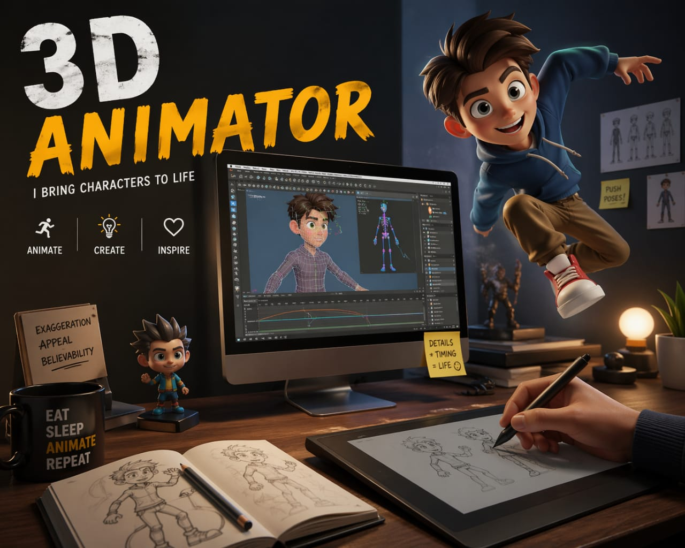

- Imagine you are watching an animated movie or playing a video game.
- The characters you see walk, run, jump, smile and show emotions
- A 3D Animator uses special software to giveo life and movement to these characters.
- 👉 In simple words: 3D animators bring digital characters and objects to life in movies, video games, and advertisements.
3D Animator
🧑💻 What Do They Do?

🎓 How to Become a 3D Animator
The courses to pursue this career are given below :
After completing 12th, you can pursue degree courses in animation, design, and VFX to build advanced skills and enter the industry.
Bachelor of Design (B.Des) in Animation
Duration: 4 Years
Eligibility: 10+2 (any stream, 50% marks)
Entrance Exam: NID DAT / UCEED
B.Sc. in Animation & VFX
Duration: 3 Years
Eligibility: 10+2 (any stream)
Entrance Exam: CUET / Institute entrance exams
Bachelor of Fine Arts (BFA) in Animation
Duration: 4 Years
Eligibility: 10+2 (Drawing preferred)
Entrance Exam: MAH-AAC-CET / College entrance exams
Note: Top design courses require entrance exams, while some colleges offer admission based on merit or institute-level tests.
After graduation, you can specialize in animation, VFX, and multimedia through advanced degree or diploma courses.
Master of Design (M.Des) in Animation Film Design
Duration: 2 Years
Eligibility: Bachelor’s degree (any field, 50% marks)
Entrance Exam: CEED / NID DAT (M.Des)
M.Sc. in Animation & Multimedia
Duration: 2 Years
Eligibility: Graduate in related field
Entrance Exam: CUET-PG / University exams
PG Diploma in 3D Animation
Duration: 1 Year
Eligibility: Graduation (any stream)
Entrance Exam: Portfolio review / Interview
Note: Advanced courses focus on specialization. Admission may require entrance exams, portfolio, or interviews.
To help students learn animation, character design, 3D animation, visual effects, and storytelling.
Diploma in Animation & Multimedia
Duration: 1 year
Eligibility: 10th pass
Provider: Animaster Design College
3D & Real-Time Design
Duration: 384 hours
Eligibility: 10+2 pass
Provider: MAAC
Advanced Program in Animation & VFX
Duration: 528 hours
Eligibility: 10th pass
Provider: Arena Animation
3D Animation Courses
Eligibility: Open to all
Provider: Coursera
3D Animation Courses
Eligibility: Open to all
Provider: AnimSchool
Maya for Beginners: Complete 3D Animation Guide
Eligibility: Open to all
Provider: Udemy
Note: These courses help students learn character animation, visual storytelling, 3D animation, rendering, motion design, and industry-level animation software from beginner to advanced level.
Note:
(Age limits, marks, and admission process may vary depending on the college or state.
Below are some colleges that offer these courses.
These courses are available in many colleges and universities across India. You can choose colleges based on your location, budget, and entrance exams.)
Colleges offering these courses in India
(Tap on a college to view the details)
After Class 12
National Institute of Design (NID), Ahmedabad Whistling Woods International (WWI) Lovely Professional University (LPU) IIFA Multimedia, Bengaluru Amity University, NoidaAfter Graduation
National Institute of Design (NID), Bengaluru MIT Institute of Design (MIT-ID), Pune Jain University, Bengaluru Chandigarh University, Punjab Maya Academy of Advanced Cinematics (MAAC) Indian Institute of Film and Animation (IIFA), Bengaluru ICAT College of Design & Media, ChennaiShort Courses & Certifications
Animaster Design College MAAC (Maya Academy of Advanced Creativity) Arena Animation Coursera AnimSchool UdemySTEP 1
Imagine you are working as a 3D Animator in a studio.
STEP 2
One day, your team starts working on a new movie or game.
STEP 3
Your job is to make a character move and act.
STEP 4
You start working on how the character walks, jumps, and shows emotions.
STEP 5
You keep improving the movement until it looks smooth and natural.
STEP 6
After finishing your work, that character is added to the movie or game.
STEP 7
When you see it on screen, you feel happy.
STEP 8
If this excites you, then this career may suit you.
Where do 3D Animators work? (Job Roles + Growth)
3D Animators work in : Animation and VFX studios, Film and Television production companies, Gaming companies, Advertising agencies, Post-production studios, Architecture and designing firms, and Digital media and entertainment companies .
🟢 Beginner Roles
Junior 3D Modeler
(After Certificate / Diploma)
Creates basic objects, props, and simple 3D assets for games or ads.
Roto & Paint Artist
(After Diploma in VFX)
Cleans video frames by removing wires, marks, or unwanted elements.
Junior 3D Animator
(After Diploma in Animation)
Works on basic movements like walk cycles and simple animations.
Texture Artist
(After Certificate / Diploma)
Adds colors, materials, and details to make 3D models realistic.
🔵 Mid-Level Roles
Character Animator
(After B.Des / B.Sc / BFA + Exp)
Creates realistic character movements, expressions, and acting.
Rigging Artist
(After B.Sc / BFA + Skills)
Builds skeleton systems so characters can move properly.
Lighting & Rendering Artist
(After B.Des / B.Sc)
Sets lighting, camera, and final visuals for scenes.
Compositor
(After B.Sc in VFX)
Combines 3D elements with real footage to create final scenes.
🟣 Advanced Roles
Animation Director
(After M.Des / M.Sc + Experience)
Leads animation teams and ensures quality and storytelling.
VFX Supervisor
(After PG Diploma / M.Sc + Experience)
Manages the entire VFX pipeline and plans complex scenes.
Technical Director (TD)
(After M.Des / M.Sc)
Solves technical problems and creates tools for animation.
Art Director
(After BFA / B.Des)
Decides the overall visual style and look of projects.
Animation & Film Studios
Work on animated movies, series, and short films for global audiences.
Game Development Companies
Animate characters, actions, and cutscenes for mobile and AAA games.
VFX Studios
Create realistic animations like creatures, stunts, and visual effects for movies.
Advertising & Marketing
Make 3D animations for ads, brand videos, and digital campaigns.
Architectural Visualization
Create walkthrough animations showing buildings and real estate projects.
E-learning & EdTech
Develop educational animations and interactive learning content.
Medical Animation
Create animations of human body, surgeries, and medical concepts.
Abroad Opportunities
Work in top countries like USA, Canada, UK, and France with global studios.
(Click Yes or No for each question)
1. Do you enjoy watching animated movies or cartoons?
2. When you watch movies or play games, do you notice how characters move or act?
3. Do you enjoy creative activities like drawing or designing?
4. Imagine you are working as a 3D Animator for an animated movie. The director gives you a scene to make. The scene is, "a boy is riding a bicycle through a busy street. He suddenly sees a dog crossing the road, he quickly applies the brakes and stopped the bicycle".You make this scene very natural. Do you like creating these types of scenes ?
5. A new 3D character is being created for an animated movie. You create movements for the character and make them talk, walk, run, and show emotions. You adjusts the movements until they look natural. After months of work, the character finally comes to life on the screen. Does this excites you?